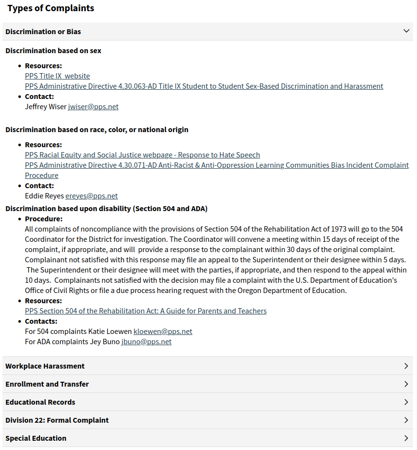

"Non-Discrimination" at PPS
On the footer of every Portland Public School webpage:
The District is committed to equal opportunity and nondiscrimination in all its educational and employment activities. The District prohibits discrimination based on perceived or actual race; national or ethnic origin; color; sex; religion; age; sexual orientation; gender expression or identity; pregnancy; marital status; veteran's status; familial status; economic status or source of income; mental or physical disability or perceived disability; or military service.
Anyone can say that they do not discriminate. What happens when they do? Who do you contact? How will they respond?
Within large organizations, people only act when something is squarely within the scope of their job description, and when it comes to a concern, they will only respond if it is a direct violation of a written policy or statute.
Here's what PPS has to say about conflict resolution (screenshot from pps.net/conflictresolution): 
PPS responds to discrimination based on sex, race, color, national origin, and disability.
If you face discrimination based on religion, age, sexual orientation, gender expression or identity, pregnancy, marital status, veteran's status, familial status, economic status or source of income, or military service... you have nowhere to go within the district.
So do you feel welcomed by the equal opportunity statement? Anyone can say that they do not discriminate. What happens when they do? Who do you contact?